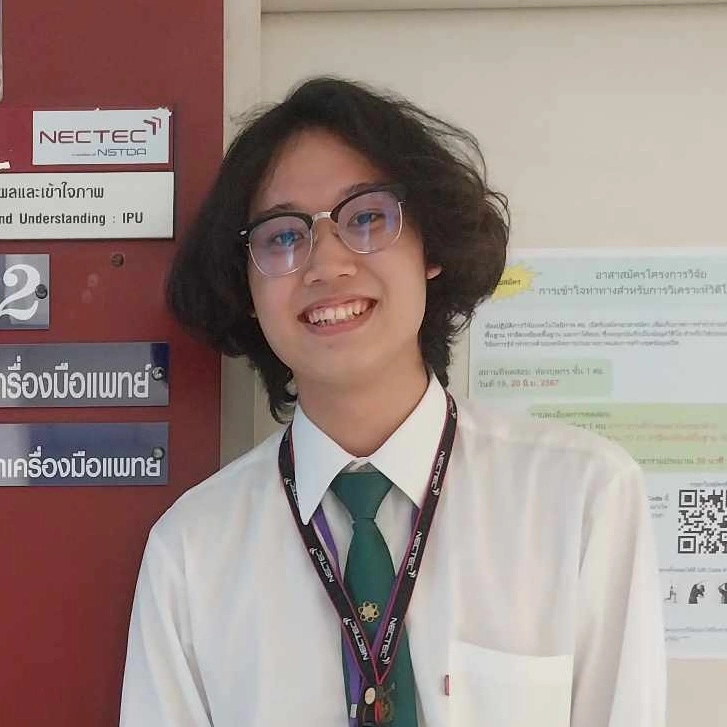

|
Tanaanan Chalermpan
I am Tanaanan Chalermpan (M), an undergraduate researcher in Artificial Intelligence at Kasetsart University, focused on resource-constrained applied AI, building interpretable, lightweight models for real-world healthcare deployment. Since my first year, I have pursued continuous research experience across NECTEC, AIIH, and KU-HCAI, contributing first-authored work spanning clinical deployment and statistical methodology. I am committed to interdisciplinary research and knowledge dissemination in AI's responsible and practical use.
Email /
DBLP /
Google Scholar
/
ORCID /
ResearchGate /
CV
|

|
Education
Kasetsart University, Bangkok, Thailand
B.S. in Computer Science (GPA: 3.33/4.00) | Jun 2023 – Mar 2027
Concentrations: Artificial Intelligence, Image Processing, Data Science, Computer-aided Diagnosis,
Social Science
Publications
Robust and Efficient Blood Loss Estimation Using Color Features and Gradient
Boosting Trees
Tanaanan Chalermpan, Duangrat Gansawat, Kantip Kiratiratanapruk,
Sanparith Marukatat, Natatikarn Jareonrattanadaechakul, Wannipa Nusupa, Urai Boonta, Wariya
Sukhupragarn, Tanyong Pipanmekaporn, Sirianong Namwongprom, Visit Siripuwanan, Sarach Tuomchomtam
| Discover Artificial Intelligence
(Q1 on Computer Vision and Pattern Recognition, 2025)
Profiling Japanese Universities for Thai Students' Decision Support Through
Hierarchical Clustering
Tanaanan Chalermpan, Nakarin Israngkura Na Ayudhaya, Sarach
Tuomchomtam | International Journal of Information and Education Technology (Q2 on
Education, 2025)
2026. Article in press.
Japanese Universities with Thai Offices Data
Chalermpan, Tanaanan et al. | Zenodo
Public Perception Meets Economic Data: An Analysis of Online Sentiment and
Economic Indicators in Thailand
Nakarin Israngkura Na Ayudhaya, Tanaanan Chalermpan, Sarach
Tuomchomtam | ECTI Transactions on Computer and Information Technology (ECTI-CIT)
2026. Under Review. Submitted.
Radiomic Triage of BI-RADS 0: Interpretable Logistic Regression for
Resource-Constrained Mammography
Tanaanan Chalermpan, Pheemmapong Rodvaree, Sarach Tuomchomtam
| International Journal of Image, Graphics and Signal Processing (IJIGSP)
2026. Under Review. Submitted.
MangaTVL: A Polygon-Aware Pipeline for English-to-Thai Manga Translation
with Reference-Free Evaluation
Tanaanan Chalermpan†, Patiput Ukham†, Sarach
Tuomchomtam | IAES International Journal of Artificial Intelligence (IJ-AI)
2026. Under Review. Submitted.
Projects / Research
Robust and Efficient Blood Loss Estimation System (NECTEC x CMU Research)
Designed and implemented a practical, highly accurate solution for intraoperative blood loss
estimation using color-based image analysis and gradient boosting. This framework achieved
comparable accuracy to deep learning models while being significantly more efficient,
demonstrating its potential for real-world clinical deployment.
Japanese University Grouping: Clustering and Statistical Analysis for
International Student Difficulty Assessment
Developed a framework to categorize Japanese universities based on the estimated Ease/Difficulty
of Study for international students. Employed Hierarchical Clustering and Statistical Analysis
(including EDA and correlation tests) to analyze institutional data, segment universities into
distinct groups, and derive key insights for prospective foreign applicants.
Research & Professional Experience
Human-Centered AI Laboratory (KU-HCAI)
Lab Manager / Artificial Intelligence Researcher | Nov 2024 –
Present
- Conduct research on profiling Japanese universities to support Thai student admission decisions.
- Mentor lab members in research methodology and applied AI techniques
- Coordinate research collaborations between the university and external partners.
National Electronics and Computer Technology Center (NECTEC)
Research Assistant (Artificial Intelligence Research Group)
| Aug 2026 – Oct 2026
- Optimized Left Ventricular Ejection Fraction (LVEF) estimation from medical video under
limited and imbalanced data.
- Developed a synthetic data augmentation approach for underrepresented LVEF classes to reduce
class imbalance bias and improve model performance.
Artificial Intelligence Technology and Innovation Center for Health (AIIH)
Medical AI Researcher (Partnership with Phramongkutklao Hospital)
| Jan 2026 – Sep 2026
- Developed an interpretable, GPU-free BI-RADS 0 mammography triage classifier for
resource-constrained edge deployment.
- Explored radiomics-based approaches for BI-RADS assessment on mammography images.
National Electronics and Computer Technology Center (NECTEC)
Research Assistant (Image Processing and Understanding Research Team)
| Nov 2024 – Dec 2025
- Developed a real-time blood loss estimation system that utilized machine learning, image
processing, and feature extraction techniques in collaboration with the Department of
Anesthesiology, Chiang Mai University.
- Conducted comprehensive literature reviews on medical and AI estimation methods.
- Authored a technical report and a scientific journal article for publication.
National Electronics and Computer Technology Center (NECTEC)
Research Trainee (Image Processing and Understanding Research Team)
| Apr 2024 – Jun 2024
- Enhanced a mammogram BI-RADS classification model’s efficiency using Focal Loss and image
processing.
- Performed image preprocessing and Exploratory Data Analysis (EDA) for blood loss estimation
research.
- Developed a shell script to automate file summation and data reporting.
National Electronics and Computer Technology Center (NECTEC)
Artificial Intelligence Consultant (Educational Technology Research Team)
| Oct 2023 (1 month)
- Delivered consultation and training in Artificial Intelligence for the ’AI & Data Science
Camp,’ part of the Specialized High School Education Development Program (RAC).
Teaching & Mentoring Experience
Kasetsart University Research and Development Institute (KU-DRI)
Workshop Facilitator | Mar 2026
- Instructed researchers and lecturers at Kasetsart University on AI-assisted research writing
techniques.
Human-Centered AI Laboratory (KU-HCAI), Kasetsart University
Lab Manager / Artificial Intelligence Researcher | Nov 2024 –
Present
- Managed lab session knowledge sharing on scientific report writing and AI pipeline
development.
Generative Artificial Intelligence (01418263), Kasetsart University
Teaching Assistant | Nov 2025 – Mar 2026
- Assisted professor in lab sessions and mentored undergraduate students on fundamental
generative AI concepts, data structures, and debugging best practices.
Machine Learning Systems (01418262), Kasetsart University
Teaching Assistant | Nov 2024 – Oct 2025
- Assisted professor in lab sessions and mentored undergraduate students on fundamental
machine learning concepts, data structures, and debugging best practices.
National Electronics and Computer Technology Center (NECTEC)
Teaching Assistant | 2024 (2 months)
- Cooperated on "Kidbright Innovation by Alumni" as part of the Specialized High School
Education Development Program in Robotics, Artificial Intelligence, and Coding (RAC).
Honors & Awards
-
Scopus Q1 Undergraduate Research Publication Award:
Faculty of Science, Kasetsart University (Mar 2026).
Awarded in official recognition of exceptional academic achievement for publishing a
first-authored/co-authored research article in a Top Quartile (Q1) international journal (Discover
Artificial Intelligence, Springer Nature) during undergraduate studies.
- STEAMs Fully-Funded Scholarship: Received a fully-funded scholarship for
high-potential students in science and scientific projects, sponsored by the Ministry of Education
(MOE) and Kasetsart University.
- Thailand New Gen Inventors Award (Gold Medal): Developed A System for Analyzing
and Diagnosing the Health of Durian Trees in collaboration with the Faculty of Natural Resources,
Prince of Songkhla University.
- KidBright Developer Conference (First Runner-Up): Developed a water level
monitoring system in collaboration with the Royal Irrigation Department, Angthong province.
- Computer Software Projects Competition (sillapa70) First Prize: From the
Ministry of Education (MOE). A System for Analyzing and Diagnosing the Health of Durian Trees
(Ver.1) using Object detection and Image Processing (2022).
- Scientific Projects for High School Students Competition First Prize: (STEAMs
Co-Creation Project) on Health and Medical Field from Kasetsart University. Antigen Test Kit and
Identification card Classification system using Object Detection and Natural language processing
(2022).
Training & Certifications
AI Builders Gen 2 (VISTEC, DELL, AWS)
Graduate | 2021 – 2022
- Graduated with the topic "ATK-OCR Classification (AOC) Antigen Test Kit and Identification
card classification system using Image Classification and Natural language processing."
Prince of Songkhla University
Participant | 2021 – 2022
- Participated in "Python Programming and Introduction to AI with Python" from the Department
of Computer Engineering.
NSTDA and NECTEC
Participant | 2020
- Fulfilled all requirements, seminars, and hands-on workshops on the topic "Fundamental
Principles of Artificial Intelligence."
Skills & Languages
- Programming Languages: Python, Shell scripting, Bash, LaTeX, SQL, C++
- Data Science: Pandas, Matplotlib, Seaborn, SciPy, Scikit-learn, Keras, PyTorch
- Technologies: OpenCV, Scikit-image, phpMyAdmin, GitFlow, GitHub, Vim, Nano,
Linux, SLURM
- Spoken Languages: Thai (Native), English (Professional Proficiency), Japanese
(Beginner)
|
|
{kind=link}